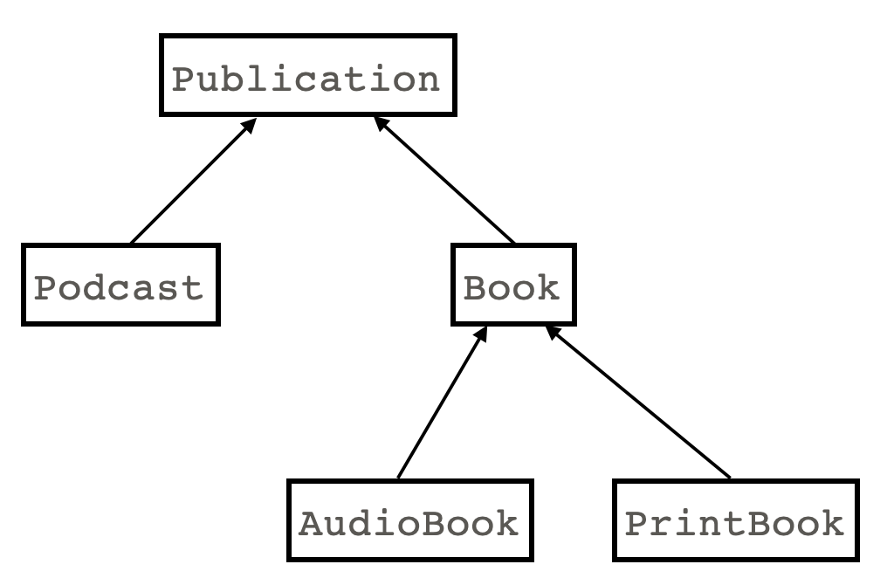
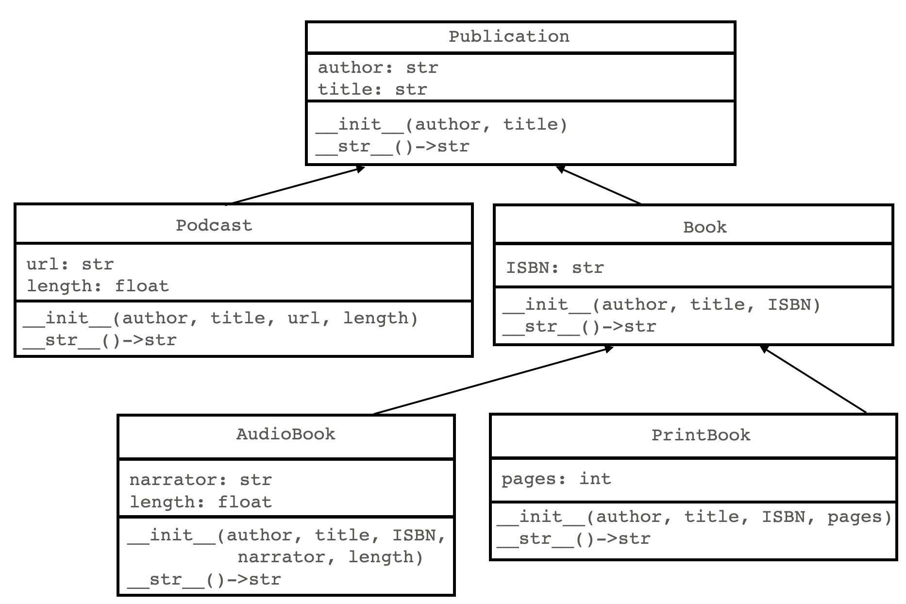

Multilevel inheritance
If a child class itself has a child class, we call that multilevel inheritance. For example, suppose we have a class called Publication, which has two subclasses Podcast and Book. Then say Book itself has two subclasses, AudioBook and PrintBook. In multilevel inheritance, class diagrams are a particularly useful visualization tool.
Class diagram of multilevel inheritance
The top-level class is sometimes referred to as a grandparent class, while a class two levels down is called a grandchild.
Side note: multilevel inheritance is different from multiple inheritance. You may find information about multiple inheritance online, which is the idea that a class can have more than one parent classes. Multiple inheritance is possible in python and C++, but not Java. We do not cover multiple inheritance in this course.
UML diagram of multilevel inheritance
When we need more details than a class diagram, we use a UML diagram, which includes lists of instance variables as well as methods:
Code example for multilevel inheritance
Here's the implementation of the 5 classes described above:
class Publication:
def __init__(self, author: str, title: str):
self.author = author
self.title = title
def __str__(self)->str:
return f"author: {self.author}, title: {self.title}"
def __repr__(self)->str:
return self.__str__()
class Podcast(Publication):
def __init__(self, author: str, title: str, url: str, length: float):
super().__init__(author, title)
self.url = url
self.length = length
def __str__(self)->str:
return f"{super().__str__()},\n\turl: {self.url}, length: {self.length}"
class Book(Publication):
def __init__(self, author: str, title: str, ISBN: str):
super().__init__(author, title)
self.ISBN = ISBN
def __str__(self)->str:
return f"{super().__str__()}, ISBN: {self.ISBN}"
class AudioBook(Book):
def __init__(self, author: str, title: str, ISBN: str, narrator: str, length: float ):
super().__init__(author, title, ISBN)
self.narrator = narrator
self.length = length
def __str__(self)->str:
return f"{super().__str__()},\n\tnarrator: {self.narrator}, length: {self.length}"
class PrintBook(Book):
def __init__(self, author: str, title: str, ISBN: str, pages: int ):
super().__init__(author, title, ISBN)
self.pages = pages
def __str__(self)->str:
return f"{super().__str__()}, pages: {self.pages}"
# main code block:
publications = []
publications.append(Book(author = "F. Scott Fitzgerald",
title = "The Great Gatsby",
ISBN = "978-1328948854"))
publications.append(PrintBook(author = "William Goldman",
title = "The Princess Bride",
ISBN = "978-0544173767",
pages = 496))
publications.append(AudioBook(author = "Ann Patchett",
title = "Tom Lake",
ISBN = "978-0063327528",
narrator = "Meryl Streep",
length = 682.0))
publications.append(Podcast(author = "Ira Glass",
title = "This American Life - The Ghost of Bobby Dunbar",
url = "https://www.thisamericanlife.org/352/the-ghost-of-bobby-dunbar",
length = 58.1))
for publication in publications:
print(publication)
output:
author: F. Scott Fitzgerald, title: The Great Gatsby, ISBN: 978-1328948854
author: William Goldman, title: The Princess Bride, ISBN: 978-0544173767, pages: 496
author: Ann Patchett, title: Tom Lake, ISBN: 978-0063327528,
narrator: Meryl Streep, length: 682.0
author: Ira Glass, title: This American Life - The Ghost of Bobby Dunbar,
url: https://www.thisamericanlife.org/352/the-ghost-of-bobby-dunbar, length: 58.1
Key points in the code example above:
- Consider the flow of information when instantiating an object of a grandchild class. For example, when instantiating an
AudioBook, the__init__()method callssuper().__init__(), which invokes the__init__()method forBook. But then the__init__()method forBookin turn callssuper().__init__(), which invokes the__init__()method forPublication. So the information goes up the chain to the top-level class. - A similar process occurs when the
Audiobook's__str__()method is called. It calls its parent's__str__()method, and that method in turn calls its parent's__str__()method. At each level the string is computed and returned down the chain, where it is combined with the string information passed back from the level above. - In the main code block, a list is created that holds a variety of objects from the 5 defined classes. Since regardless of type, each is also an instance of the
Publicationclass, they can be treated in a homogenous way. Thus the for-loop can seamlessly traverse the objects and print them, even though they are potentially all of different subclasses. - Predict what will be output by the following code:
print(type(publications[2]))
print(isinstance(publications[1], Book))
print(isinstance(publications[3], Book))
print(isinstance(publications[2], Publication))
Answer:
<class '__main__.AudioBook'>
True
False
True
Video explanations
Concepts:
Implementation: